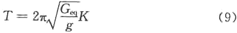

3．3 地震影响
3．3．3 建筑设备支架(或连接件)的基本自震周期可按下式计算：

式中：T——体系(结构)自震周期；
Geq——等效总重力荷载代表值(包括质点处的重力荷载代表值和折算的支架或连接件结构的自重)；
g——重力加速度；
K——支架(连接件)结构的侧移刚度，取施加于质点上的水平力与它产生的侧移之比。除考虑自身材料性质外，应根据其支承点的实际连接状态，分别采用刚接、铰接、弹性连接或滑动连接等简化的力学模型计算。